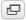

The content area of the screen shows three areas: Mailbox folders, Messages List and the Preview Pane which can be toggled.
Messages List¶
This part of the screen is displaying the list of all messages in the currently selected folder. The number of messages displayed in the list and the total number of messages in that folder is stated right below the list. According to your settings, this list only displays a limited number of messages at a time. Use the allow buttons below the list to browse through the multiple “pages”.
The application periodically checks for new messages and will update the display if new emails arrived. You can force this check manually by clicking the Refresh button in the email view toolbar.
Open a Message for Reading¶
If the Preview Pane is visible, a single click on a message will display it in the preview right below the list. In order to open a message in full view or a new window (depending on your settings), double-click it with the mouse. Another way to open a message in a new browser tab or window is to right-click on the subject and then choose “Open Link in New Tab/Window” from the browser’s context menu.
Selecting a message in the list will also activate toolbar buttons that offer further actions related to the selected message, such as replying, forwarding or deleting it.
Mark Messages as Read or Flagged¶
When opening an unread message for reading it’ll automatically be marked as read. This can also be done directly in the list by clicking the unread star in front of the subject. Click it again to mark the message as unread.
If the flag column is visible (see Change message list columns) you can flag/unflag a message by clicking on the flag column of the message row. Furthermore there’s the Mark menu in the toolbar that allows you to flag all selected messages with one click.
Change messages list sorting¶
The sorting order of the messages can be changed by clicking the column in the list header which you’d like the messages being sorted by. Click it once more to reverse the order. The column used for sorting is highlighted in the list header.
Threaded message listing¶
Instead of sorting messages by their date or subject, conversations spawning multiple messages can be grouped together as “Threads”. Use the switch buttons on the left in the message list footer to toggle between List or Threads view. When in thread mode, groups of messages can be collapsed or expanded using the arrow icons in the leftmost column of the message list.
Change message list columns¶
The columns displayed in the list can be adjusted by clicking the List Options icon in the leftmost column of the message list header. This opens a dialog where you can select which columns to display and how to sort messages. Click Save to apply the changes and to close the dialog.
Note
The “From/To” column is a magic column that displays the sender of the message or the recipient when you switch to the Sent or Drafts folder.
The position of the columns in list can also be adjusted by dragging the header of a specific column with the mouse and dropping it at where you’d like it to appear.
Selecting Multiple Messages¶
With a single click on a row in the messages list, the according message is selected and highlighted. By pressing either the Shift or Ctrl keys on your keyboard while clicking on a message, you can select multiple messages or unselect them.
There are also selection helpers hidden in the Select drop-down menu located in the message footer. The menu allows you to select all unread or flagged messages at once or to invert or reset the current selection.
Mailbox folders¶
On the left side you see a hierarchical list of all folders in your mailbox. Folders can be used to file email messages by topic, sender or whatever you choose for organization.
Incoming messages usually appear in the Inbox folder which is the first item in the folder list. There are some special folders which are used by the system to store sent (Sent) or deleted (Trash) messages and where not-yet-sent message drafts (Drafts) are saved. These system folders are indicated with special icons.
The number of unread messages in each folder is displayed at the right border of the folder list.
Click a folder in the list to show the contained messages in the message list on the right. The currently selected folder is highlighted in the list.
Folders with hidden subfolders are indicated with a small [+] icon which can be clocked to expand or collapse the folder tree.
Folder operations¶
In the footer of the folder list, the Folder actions icon shows a list of folder-related actions when clicked. Most of the actions in the menu affect the currently selected folder.
- Compact
- This action will compress the folder size by finally deleting messages that have been marked for deletion.
- Empty
- This will delete all messages in the selected folder permanently. Be very careful with this operation as it cannot be undone. For security reasons, this action is only available for the Trash and Junk folders.
- Manage folders
- This menu item will take you the settings section when you can manage the mailbox folders. This is where you can create, delete, rename or re-organize your email folders.
Quota display¶
If your mailbox is limited by a maximum size, the quota display located in the footer of the folder list indicates the current usage of the available disk space. Move the mouse pointer over the percentage display to see the real numbers of your quota usage.
Preview Pane¶
If enabled, the preview pane below the message list displays the currently selected message right in the main email view. In order to open it, click the toggle icon in the message list footer. Clicking the same icon again will hide the preview pane.
Shortcut Functions¶
In the upper right corner of the preview pane are buttons for often used actions like reply or forward the message.
The rightmost icon  will open the message in a new window to have a full-size view on the entire message.
Expanding the Message Headers¶
The preview pane is meant to give you a quick view of the message. Thus only important message fields such as sender and date are displayed right away. The header part of the preview can be expanded with click on the down-arrow at the left of the header.